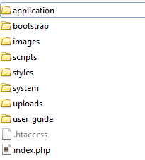
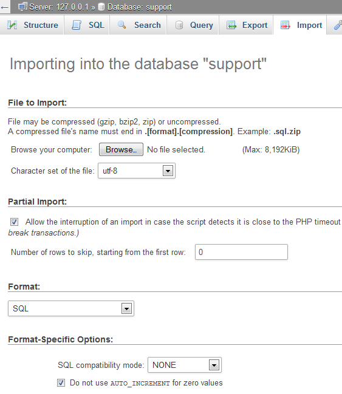
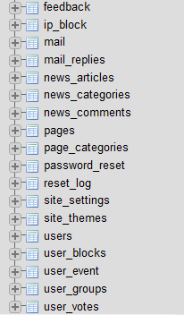
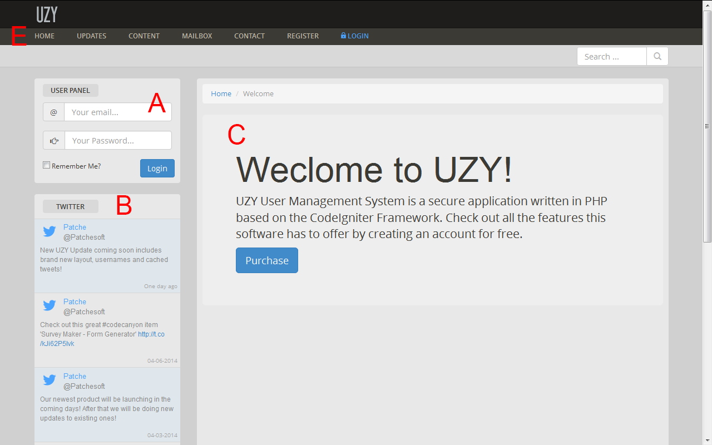
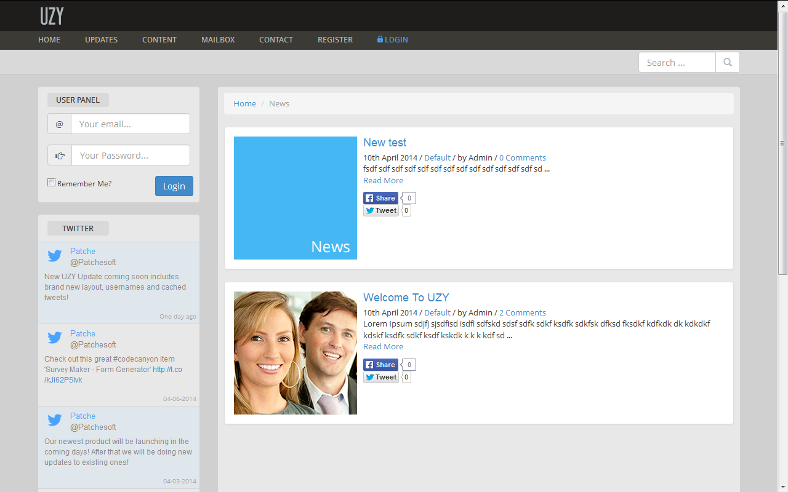
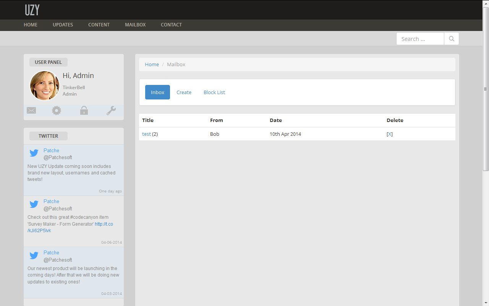
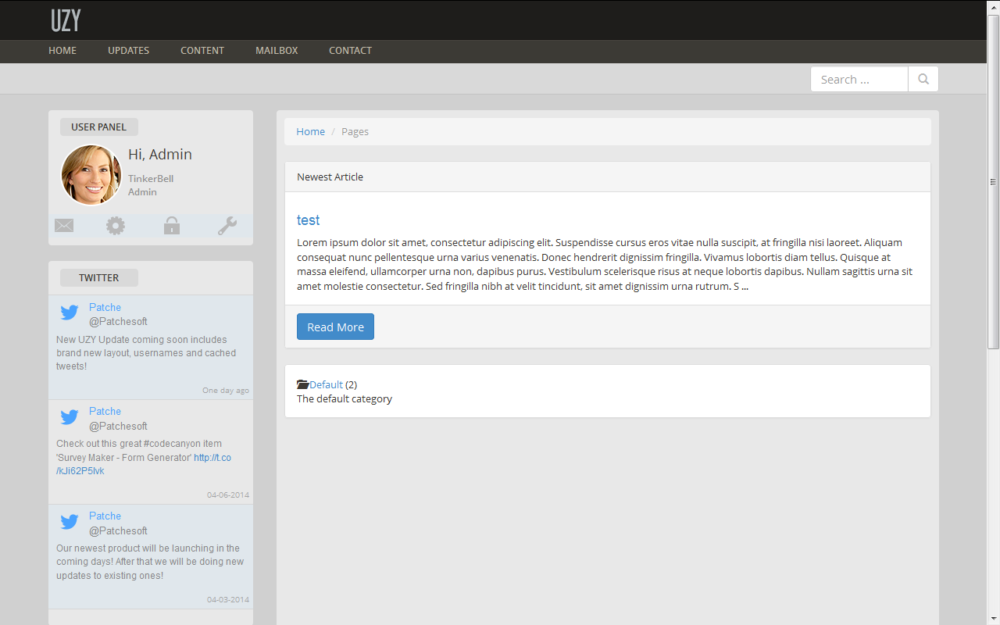
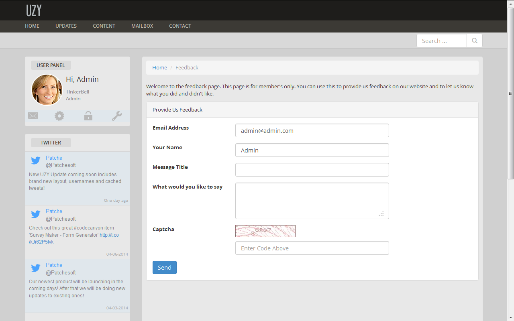
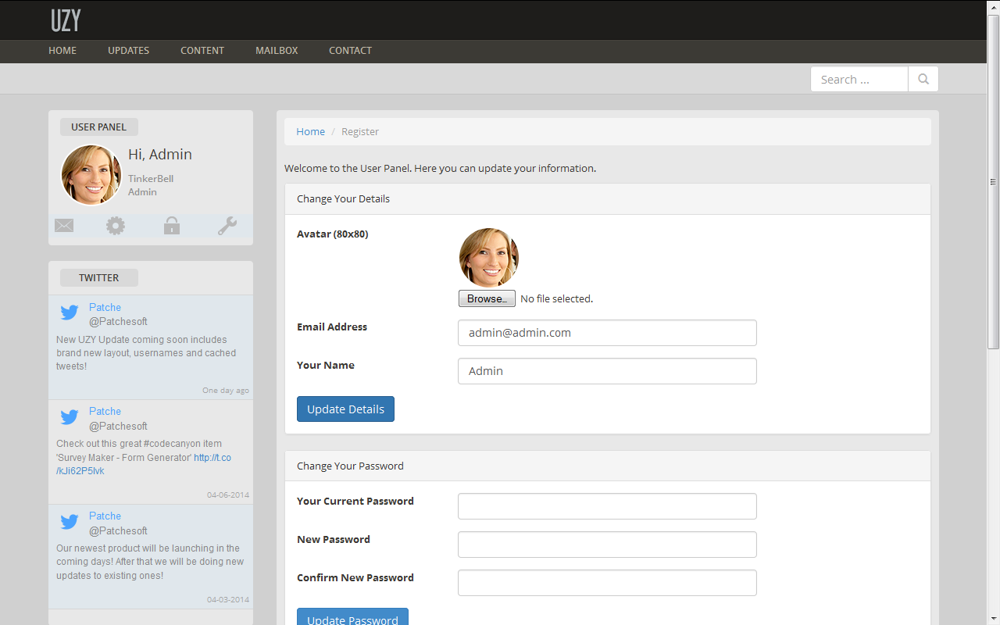
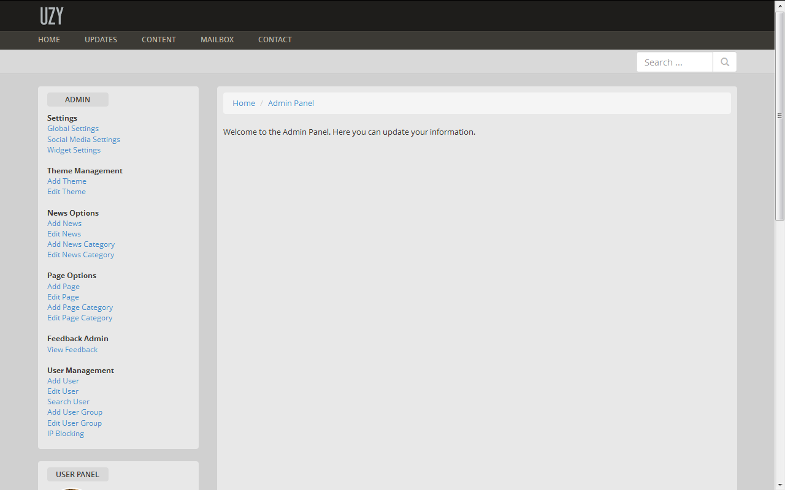

Created: 06/03/2014
By: Patchesoft
Email: patchesoft@gmail.com
Thank you for purchasing the UZY - Secure User Management System application. If you have any questions that are beyond the scope of this help file, please feel free to email via my user page contact form here. Thanks so much!
You can also read our QuickStart Guide
This application is built up around the CodeIgniter framework. This framework is freely available on the internet and documentation for using the source code can be founded on their website: http://ellislab.com/codeigniter. CodeIgniter is a PHP Framework written in MVC (model-view-controller) format which allows developers to create applications that are structured in a very clean and efficient way. When you unzip the UZY System download, you will be presented with the following directory structure. Below is a quick overview where you can find various files if you are new to using CodeIgniter.

You can find more information on directory structure at the CodeIgniter website and reading the User Guide: http://ellislab.com/codeigniter/user-guide/.
Once you have downloaded your file from the Envato Marketplace, you will need to extract the files from the ZIP file. You will need to upload the UZY System core files to a webserver. First locate the core files in the folder: /UZYSystem/core_files/core.zip. You will need to extract the files from the zip and upload them so that these files are in your main directory on your webserver, usually this is the public_html folder. Your webserver's main directory should look something like this:
Before you can use your UZY System, you will need to edit the config files. First locate the config file in: application/config/config.php and open it up using a text editor such as notepad. The only line you should need to edit is the:
$config['base_url'] = 'http://www.example.com/';Replace the http://www.example.com with your own domain name, making sure you keep the quotation tags around it as above. There are some other settings that you can also edit in this file if you feel the need to customise your UZY System further but for a basic installation this is all you should need to edit. Save the file and overwrite the existing one on your webserver.
The second file you will need to edit is your database file. Find the file: application/config/database.php and open it up using a text editor like Notepad. You will need to edit the lines listed below with your own database login information. For the most part, host stays the same as localhost unless your web host specifies to you otherwise. You will need your database name, database username and database password.
$db['default']['hostname'] = 'localhost'; $db['default']['username'] = 'your_username'; $db['default']['password'] = 'your_password'; $db['default']['database'] = 'database_name';Once you have modified this file, save it and overwrite the existing one on your webserver.
Next you will need to execute the SQL file that came with the UZY System download. This file will create the database tables that are used to store the data of your application. Usually you can import the SQL tables by using a database management system like PHPmyAdmin. The SQL file is located in UZYSystem/core_files/database.sql in the UZY System download.
To Import the file, login to your database management system, such as PHPmyAdmin. Make sure you are on the database that you named in the database.php config file then locate the Import Tab on PHPmyAdmin.
Next select the browse button (as shown in the screenshot above) and locate the SQL file (UZYSystem/core_files/database.sql) from your UZY System Download. Next click the Go! button and you should now see database tables appear in the left sidebar.
Finally, you will need to run the install file in your web browser. You should be able to locate it by going to http://www.mydomain.com/install/ where mydomain.com is replaced by your own. If you're having problems accessing this URL, double-check that you entered the correct information in the config.php file. If you are sure that it is correct, it may be something to do with your webserver's settings with allowing friendly URLs. The problem most notably is usually with the .htaccess file- make sure this file is in your public_html directory (like in the directory screenshot above). If you still have problems, head to the Troubleshoot section of this guide.
On the Install Page, you will need to create the admin account which will have all the privleges for managing the UZY System. You can also setup some initial settings for getting your UZY System started (you can change these later).
IMPORTANT: Once you have installed the UZY System, please delete the file application/controllers/install.php! This will prevent other users from messing up your settings.
INSTALLING IN A SUB-FOLDER
If you're installing the software in a sub-folder, such as http://www.example.com/uzy_system/ then you will need to modify the .htaccess file inside the main directory (the one that holds the application, bootstrap folders etc). All you need to do is open up the .htaccess file in your text editor and copy the following code, replacing the sub-folder with the name of your sub-folder (in this example, the sub-folder is called uzy_system. Replace this with the name of your sub-folder).
RewriteEngine On
RewriteBase /uzy_system
RewriteCond %{REQUEST_FILENAME} !-f
RewriteCond %{REQUEST_FILENAME} !-d
RewriteRule ^(.*) index.php?/$1
Save the file as .htaccess and overwrite the one inside your main directory that you used to install the software in (the folder containing the application, bootstrap folders etc). You can skip this step if you're installing in your main folder.
This part of the guide is to show you where the most common elements of the site are located. Remember, this site uses CodeIgniter Framework, so for well-documented additional support, please use their website and user guide: http://ellislab.com/codeigniter/user-guide/
The site's styling is based off Bootstrap 3; Bootstrap 3 comes with lots of predefined CSS elements that you can use to create well presented websites with. You can view the Bootstrap documentation and examples here: http://getbootstrap.com/. If you wish to upgrade the Bootstrap version or make your own changes to it, you can find the files in the bootstrap/ directory.
The UZY System also uses it's own custom styling to create the site layout. You can find the stylesheet file in styles/main.css folder. The UZY System also has a Theme System in place which allows you to change the theme of your site with a few simple clicks. The theme CSS files are also located in the styles folder. For more information on creating your own theme, please see the section on Themes below.
The template files, also known as views, can be found in application/views/. These files contain the HTML of the site and modifying these files allows you to change the way the site presents data. These files also contain some PHP code so it's important to know what you're doing when editting these files. The layout file can be found in application/views/layout/layout.php.
The controller files, which contain the site logic, can be found in application/controllers/ folder. These are PHP files that are used to control how the site works.
The model files can be found in application/models/ which contain the database logic.
The Javascript files can be found in the scripts/ folder.
Some 3rd Party libraries have been used in this software. One that may be of interest to you is the HTML Filter library, which whitelists certain HTML elements that can be used for the Knowledge Base. This file can be found in application/libraries/lib_filter.php.
Below you can view a screenshot of the frontpage. This section aims to guide you what is happening on your Frontpage of your UZY System.

The News System allows the Admin accounts to create news posts in the admin panel that can then be viewed by users of your system. This is a great way to let them know of new updates and also to receive feedback on your updates in the form of comments.
News posts can have two images set for them; a thumbnail image and a bigger image for display on the main page. Each news post can be catagorised and you can view the different news catagories or news posts in a particular catagory by viewing the catagories page. All of this information can be updated/changed inside your Admin Panel.
News posts also come with a comment section; only logged in users can post comments. Comments are protected by Captcha Code so you won't have to worry about bots and there is also a option to delete comments for moderators and admin user groups.
We have also implemented the Social Network Sharing buttons of Twitter and Facebook which allow your News Posts to be shared on these websites with a simple click of a button by users. This will help pull in more traffic to your website.
The Mailbox feature allows users of the UZY System to send private messages to each other. When a user receives a message, they are notified in their User Panel Widget; we use a simple AJAX script to allow the user to easily remove notifications quickly.
Each user will have their own inbox which stores their messages in. Users can received messages only from registered users and a user will need to know their username in order to send them a message.
The system also comes with a Block List which allows you to block users from messaging you by entering their Username. You can unblock a user at any time. Users on the block list will not be allowed to send messages to you.
The UZY System also comes with a Page System which allows you to create custom pages in the admin panel. The Pages System comes with a WYSIWYG editor that allows you to add images, videos and other elements to make great page content.
Each page can be given a title, a selected category and the main page content. We have also made it so you can select whether certain users can view your pages; you can decide if they need to be logged in or if only a certain user group can view them.
Pages also come with a voting system which allows users to vote on whether they found a page useful or not; you can disable this in the admin area.
Pages can be viewed by category so it makes your system very organised. You can create your own categories in the admin panel.
Another part of the UZY System is the contact page. This page presents a way in which your users can send you messages directly to you. It is protected by Captcha so that you shouldn't get bots abusing it.
In the Admin Panel you can set whether you want only logged in users to use the Contact Page. A user must provide an email address in order to send you a message through the contact page.
You can view all the contact messages in the Admin Panel under the Feedback link. Here you can choose to delete the message or reply to the message; replying to the message will send the user an email to the email address they used in the Contact Page.
The User Panel allows your registered users to update their information, including their email, avatar, name and password.
User's can upload their own avatar via the User Panel; you can disable this option if you like in the Admin Panel.
Users can also change their password on this page. Passwords are encrypted using the latest hashing methods.
The Admin Panel allows you to manage and customise your UZY System. This section will give you an overview of the various options that the Admin Panel provides and also show you how you can benefit from its features.
The Admin Panel can be accessed by highlighting the Home tab and clicking on the Admin Panel link in the Drop down menu. This link only appears if the account logged in has been given the Admin Panel access.
There are three types of access levels that can use the Admin Panel.
Global Settings - This area of the Admin Panel allows you to modify various settings for the UZY System. These settings are very important to the site so access is limited to the Admin only. Options include being able to change the site name, File Uploads and Disable Social Login
Social Media Settings - These settings are to do with your Social Media Accounts. You can enter various information for Twitter, Facebook and Google in order to enable Social Accounts Login. You can also enter your WordPress website links to manage the Social Media Icons at the top of the page.
Widget Settings - These settings allow you to modify the Widgets displayed in the sidebar. You can disable widgets, make them only appear on the frontpage and also update the content they display.
Add Theme - The UZY System allows you to add your own Site Theme. Themes change the appearance of the layout; in order to do this you will need a theme css file; you can find some examples in the styles folder.
Add News - This is where you can create new News Posts. News posts are displayed under the News Tab on the UZY System. You can disable comments on individual posts and upload your own news images.
Add Page - You can add pages from this section. Pages come with it's own WYSIWYG editor that allows you to add images, video and other HTML elements to create great content. You can also restrict pages to be viewed by certain User Groups.
View Feedback - When you receive feedback from your Contact Page, it is displayed in this section. You can either reply to the feedback or delete it.
IP Blocking - This low-level IP Blocking system allows you to blacklist certian IP addresses from accessing the UZY System. Blocked IPs will not be able to login or register accounts.
Add User - Here you can add your own Users to the system.
Add User Group - You can create your own User Groups and assign them to users. User Groups can also be set access levels, such as moderator, user admin or admin. You can also set certain User Groups access to only certain pages in the Page System.
You can modify the HTML and CSS of the UZY System to match the look and feel of your website. You can manually edit the CSS file that controls the site's look and feel.
You can find the CSS file in styles/main.css. Here you will be able to see the current rules that have been created for the site. You may want to put your own rules at the bottom of the file, or even create your own CSS file and include that into the site layout. This will be useful should you ever wish to upgrade the UZY System with a newer version and your settings won't be overwritten.
The UZY System also uses Themes that allow the system to update the look and feel of the system. You can find the Theme CSS files in the styles folder. They are labelled as theme1.css, theme2.css etc. You can create your own theme css file by opening one of these files and copying it's contents into a new css file. Then in the Admin Panel you can add your own theme to the site. Once the theme is added, go to the Global Settings section and selected the theme from the Theme List.
You may also wish to change the HTML of the site. All HTML files are inside the application/views/ folders. The layout HTML file can be found in application/views/layout/layout.php. This file is the core of the site structure. There are some PHP coding inside the HTML files which is used to generate the dynamic content; we suggest not modifying these as it could cause unexpected errors in your system.
Remember, you can find out more information on how to use Views, Controllers and Models using the CodeIgniter framework by reading their documentation: http://ellislab.com/codeigniter/user-guide/.
I can't access any pages on my UZY System. I keep getting 404 and Page Cannot Be found errors. What can I do to solve this?
Usually this is due to an issue with your .htaccess file. This file is used to reroute friendly URLs for the UZY System (such as http://www.mydomain.com/news/view/1). Sometimes the .htaccess file is blocked by the server host, so you may need to contact your web host and ask them to be allowed to use your own .htaccess file. (We provided one in the download file). You will also need to make sure your webhost has mod_rewrite enabled. You may find using different .htaccess settings works better for you and your host. We recommend contacting your web host to see if they can help with this issue.
I get "No input file specified." when trying to access the install page
This is due to not having the correct .htaccess settings. If you have installed the UZY System in a sub-folder, please edit your .htaccess file as outlined above. If that doesn't work, try using the file UZYSystem/extra/access/dh_.htaccess in your download. Rename the file to .htaccess and overwrite the one in the main directory (You can also find the default.htaccess file which is the one that is used by default and works for most applications)
I am getting database errors when trying to access my UZY System
Please make sure that you imported the SQL file that was included in the download zip. This file contains all the database tables needed to create the UZY System.
I want to put my UZY System in a sub-folder on my server, such as (http://www.example.com/uzy_system/). How do I do this?
You will need to update your config files to make sure your domains are correct. If you have issues with doing this, open up the application/config/config.php file. Change the base_url variable so that it includes your sub-folder.
Where can I get additional support for my UZY System?
You can contact us via email provided on this document and we will try to respond within 2 days.
If you would like to translate your UZY System into another language, then you can do so by modifying the language files. Follow the simple steps below to get started:
You are now ready to begin editting these files. The content_lang.php contains all translations for most of the content pages on the site. The admin_lang.php contains all the translations for the admin panel areas of the site (including agent panel). The error_lang.php file contains all the error messages that are given to users when they do something wrong. You are free to translate them all or just a few. The main one should be the content_lang.php as those translations are the ones your users will mostly see.
To edit the translations, all you need to do is type the new correct text inside the double quotes. For example, the following is a couple of lines from the content_lang.php file:
$lang['ctn_3'] = "Provide Us Feedback"; $lang['ctn_4'] = "Email Address";
To translate, you just need to modify the text within the double quotes. For example, a french translation would be:
$lang['ctn_3'] = "Fournir nous Commentaires"; $lang['ctn_4'] = "Adresse e-mail";
Save the file when your done. The final step for your translations to take place, you need to edit the application/config/config.php file. Change the following line:
$config['language'] = 'english';
to the name of the folder that you stored your new language files in. In my case, it was french, so I change it to:
$config['language'] = 'french';
Save config.php and you should see your new translations take place.
Patchesoft